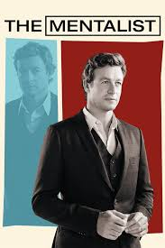

About the series
The Mentalist is a crime drama series about Patrick Jane, a former psychic medium who works as a consultant for the California Bureau of Investigation. He has excellent observation skills and understands people very well. Patrick helps the team solve difficult cases while searching for the person responsible for his family’s death.
Why I like The Mentalist
I like this series because every episode has an interesting mystery. Patrick Jane is a clever and unusual main character. The show also has memorable characters, humour, and an exciting long story.
- Interesting detective cases
- Smart main character
- Strong team of investigators
- Humour and dramatic moments
- Patrick Jane notices small details.
- The team investigates a crime.
- They find clues and suspects.
- Patrick explains how the crime happened.
